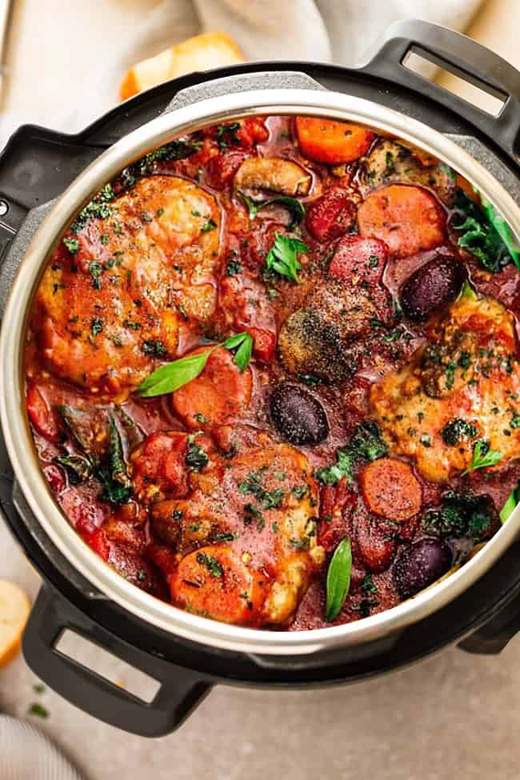

Chicken Cacciatore

Ingredients
- 2 tablespoons extra-virgin olive oil
- 1 1/4 pounds boneless, skinless chicken thighs, cut into 1-inch chunks (about 6 thighs)
- Kosher salt and freshly ground black pepper
- 1 pound farfalle
- 3 cloves garlic, minced
- 1 small onion, thinly sliced (about 1 cup)
- 1/4 cup pittted kalamata olives
- 2 tablespoons capers, with liquid
- One 20-ounce jar marinara sauce
- 3 cups baby spinach
- Greated Parmesean, for serving
- Fresh basil leaves, for serving
Directions
-
Pour the olive oil into the pot of a 6 to 8 quart Instant Pot.
Add the chicken, 1 teaspoon of salt, and 1/2 teaspoon pepper.
Stir until evenly coated. Add the pasta, garlic, onion, olives, capers
and marinara sauce. Fill the empty jar with 2 1/2 cups water, tighten the lid
and shake to remove any sauce left in the jar. Pour the water over the pasta
mixture and stir until combined.
-
Follow the manufacturer's guide for locking the lid and preparing to cook.
Set pressure cook on high for 4 minutes. After the pressure-cook cycle is complete,
follow the manufacturer's guide for quick release and wait until the quick-release cycle
is complete. Being careful of any remaining stream, unlock and remove the lid and stir
the pasta.
-
Stir in the spinach. Follow the manufacturer's guide for locking the lid and preparing to cook.
Set to steam the pasta for 1 minute, just unitl wilted. After the pressure-cook cycle is complete,
follow the manufacturer's guide for quick release and wait until the quick-release cycle is complete.
Being careful of any remaining steam, unlock and remove the lid. Sprinkle with Parmesean
cheese and fresh basil before serving.